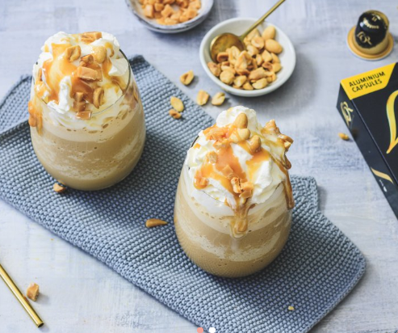

voorgerecht
hoofdgerecht
nagerecht
Salted caramel ijskoffie
Met dit recept hoef je niet meer naar het terras voor dit ultieme zomerdrankje, want deze variant met salted caramel is super easy om zelf te maken.
Ingrediënten
- 1 tl honing
- 80 ml espresso wij gebruiken hiervoor 2 Espresso Ristretto capsules van L'OR ESPRESSO
- 1 hand ongezouten pinda's
- 75 g fudge
- 100 ml gecondenseerde melk
- 10 ijsklontjes
- 50 g slagroom
Bereidingswijze
- Roer de honing door de warme espresso zodat deze helemaal oplost. Laat de espresso daarna goed afkoelen.
- Rooster ondertussen de pinda's en smelt de helft van de fudgeblokjes tot een karamelsaus. Voeg een flinke snuf zout toe aan de karamel.
- Snijd de rest van de fudgeblokjes in kleine blokjes en hak de pinda's grof.
- Doe vervolgens de espresso samen met de gecondenseerde melk en de ijsblokjes in een blender. Mix dit door elkaar totdat het ijs goed gecrusht is.
- Verdeel de ijskoffie over 2 glazen. Maak af met een flinke toef slagroom, de karamelsaus, de stukjes fudge en tot slot de pinda's.

Tip: Gebruik lactose vrije melk bij een lactose intollerantie.